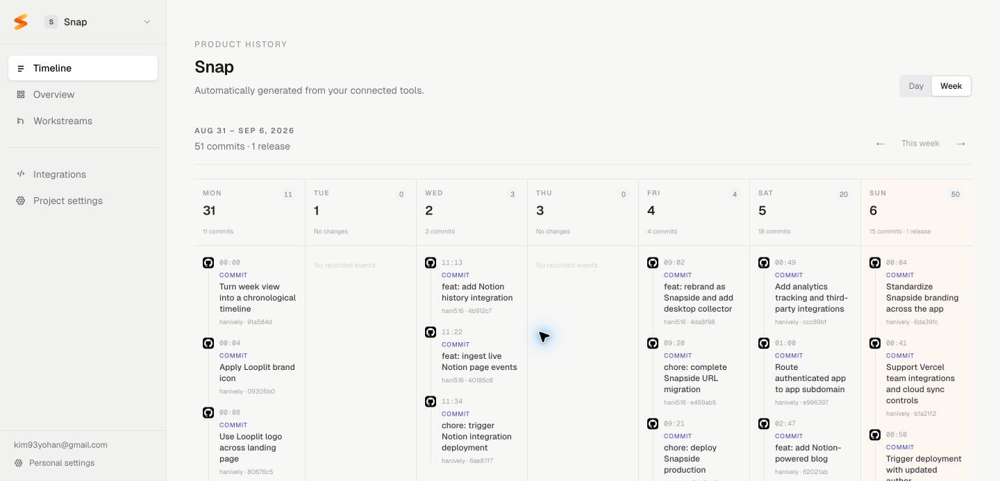
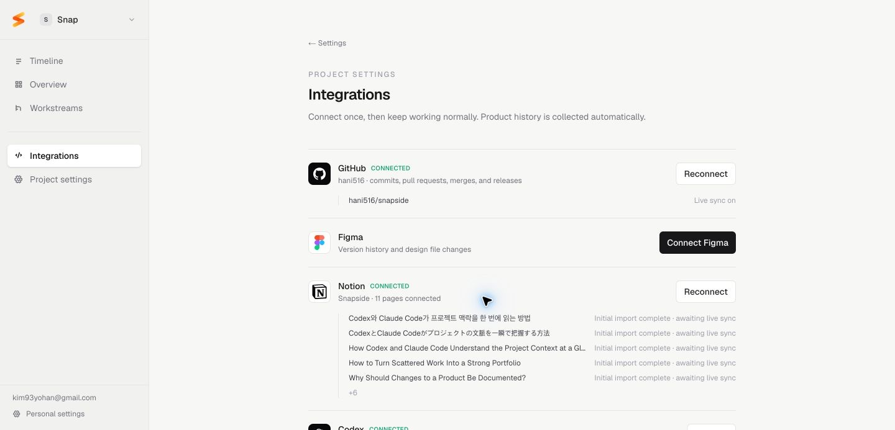
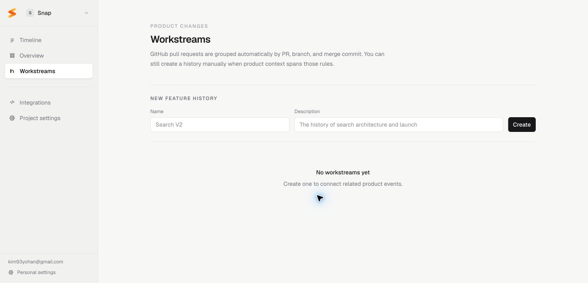

NotionPlan
Product History Platform
普段使うツールを一度接続すると、分散した変更を自動で収集し、Timelineから原文まで確認できるProduct History Platformです。

01 / Background
企画、デザイン、コード、データ、配信の記録は各サービスに残ります。しかし、プロダクト全体で何がいつ変わったかを確認するには、それぞれを開き直す必要があります。


02 / Problem
新しい管理作業を追加せず、すでに各ツールで発生している変更からProduct Historyを構成する必要がありました。
計画、画面、コード、配信の履歴が異なるサービスに保存される。
時間が経つと、何を変更したかだけでなく、その判断の背景も失われる。
製品を作る作業とは別に、日報や作業ログを書く負担が生まれる。
完成画面だけでは、問題解決の過程と個人のContributionを説明しにくい。
AI Coding Toolが複数サービスの最新状態を一度に参照できない。
Design questionどうすれば新しい記録行動を求めずに、分散した変更を一つの製品史として残せるか。
03 / Competitive Landscape
公式ドキュメントを基に、各サービスの基本単位とユーザーが更新する情報を比較しました。3サービスは計画した仕事の進行を管理し、Snapsideは制作ツールで実際に発生した変更を収集します。
調査範囲 · 公式プロダクトページ / ヘルプドキュメント
ユーザーがTaskとStatusを入力・更新する。
Notion、Figma、GitHub、Vercelで発生した変更を収集し、時間順にまとめる。
Historyは発生済みの変更を収集し、Issueはこれから行う作業を記録する。同じ製品の中で、異なる情報として扱います。
04 / Design Principles
大量の変更を派手に見せるのではなく、個人が必要な時に経緯を読み直せる静かなインターフェースを基準にしました。
プロジェクトに一度接続すると、その後の変更を自動で収集する。
各イベントから元ページ、File、Commit、Deploymentへ戻れる。
異なる形式の変更を、時間を共通軸として読み直す。
チーム報告より、個人の判断・成長・Contributionを中心にする。
多くのイベントを密度高く、優先順位を崩さず表示する。
05 / UX Decisions
3つの変更をコミットで確認。理由は設計仮説として示し、ユーザーへの効果とは区別します。
一覧 → 別の作成ページ → タイトル＋作業内容
一覧＋作成欄 → 内容入力 → 担当者・優先度
コードから再構成したフロー図。実画面の比較ではありません。
Week / Month → 日付から記録を探す
Week / Month ＋ Workflow → 関連作業をまとめる
コードから再構成したフロー図。実画面の比較ではありません。
Project → Timeline / タブ: Timeline → Issue → Analytics → Note
Project → Overview / タブ: Overview → Timeline → Issue → Note
コードから再構成したフロー図。実画面の比較ではありません。
コミットが示すのは実装の変更です。問題の存在や改善効果を証明するものではありません。GA4の数値も、この3変更の前後比較ではないため成果として結び付けていません。
06 / Core User Flow
初期設定以降は記録のための操作を要求しません。Timelineで変更を探し、Event詳細から必要な原文へ戻ります。
製品単位のContextを作る。
普段使うServiceを選ぶ。
既存の変更を取り込む。
新しいActivityを自動収集。
週・日単位で流れを読む。
変更内容を読み、原文を開く。
MCPから最新Contextを読む。
07 / System Model
MCPがHistoryを書くのではありません。各Integrationから収集・正規化されたHistoryを、CodexやClaude Codeが読み、プロジェクトのContextとして利用します。
Notion pageFigma fileGit commit / PRVercel deployment Supabase
SupabaseAI Toolごとに複数Serviceを接続して個別に読み解くのではなく、Snapsideで収集・正規化した同じContextをCodexとClaude Codeから利用します。
Sourceごとに形式と時間軸が異なるため、AI側でプロダクト全体の順序と関係を組み直す必要がある。
ツールをまたぐ変更順序、作業目的、元のSource linkを同じContextとして読み、必要な時だけ原文へ戻れる。
AI Tool側の接続先をSnapside MCPにまとめる。
異なるActivityを時間とSourceをまたいで読む。
要約だけで終わらず、元の記録まで確認する。
CodexとClaude Codeが同じProduct Historyを利用する。
08 / Interaction Detail
Notion Activityは更新時刻だけでは判断できません。前回Snapshotと現在の状態を比較し、追加・削除・修正を分けて表示します。
変更量が多い時は要約を先に表示する。
BlockとPropertyの詳細は展開して確認する。
元のNotion Pageへ移動するLinkを保持する。
09 / Key Screens
以下は既存の画面資料です。今回の3コミットの変更前後を示す画面ではありません。Workflowの実装根拠は上記のコード差分を参照してください。



10 / Design System
サービスごとのブランドを残しながら、Eventの階層、状態、操作は同じ規則で読めるようにPrimitive、Semantic、Componentの三層で管理しました。
LogoとSource colorは識別に使い、本文の階層と操作位置は統一する。
Mouse、Keyboard、同期状態の違いを色だけに依存せず表示する。
同じSemantic tokenを共有し、画面密度だけを利用環境に合わせる。
AccessibilityVisible focus · 44px target · Contrast · Reduced motion · Status text
11 / Outcome & Retrospective
定量成果を作らず、現在実装した体験と、次に検証する課題を分けて整理しました。
複数Serviceの変更を一つの時系列で確認する。
各Eventから元の記録へ戻り、Contextを確認する。
EventにMemoを残し、不要な記録は非表示・復元できる。
収集済みHistoryをAI Toolが読み、最新のProject Contextとして使う。
コード差分で確認できる変更を記載し、負担軽減や文脈維持は未検証の設計意図として扱います。
Issue作成、特定機能の変更探索、初見Projectの状況説明を課題とする。ここではテスト実施や効果の確認は報告していません。
Scope note — 利用者数、時間削減、満足度などの未検証指標は掲載していません。